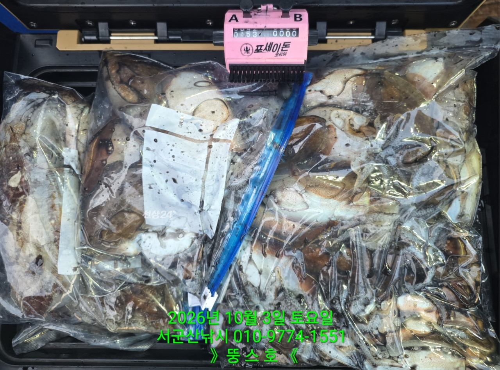
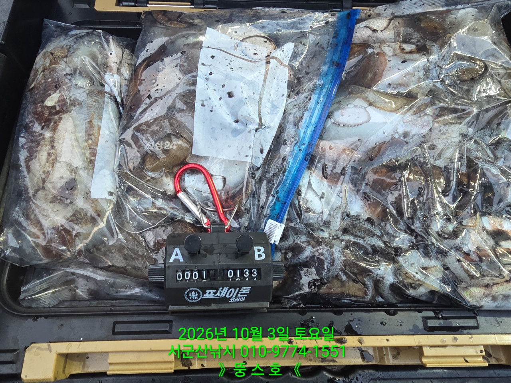
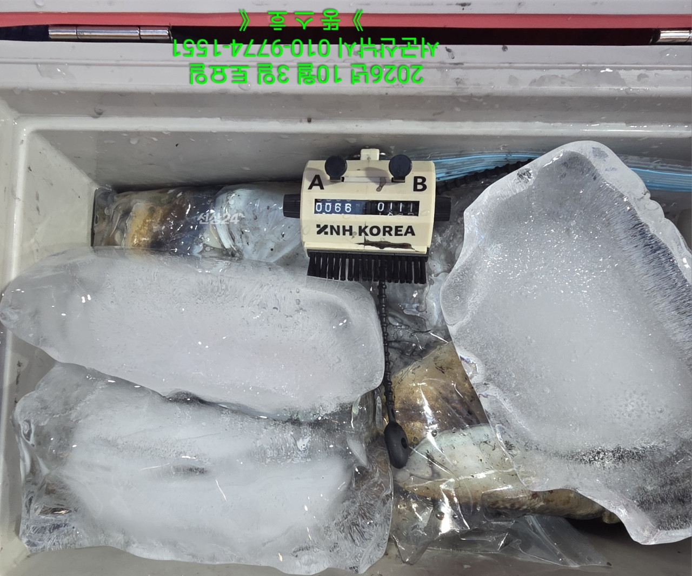
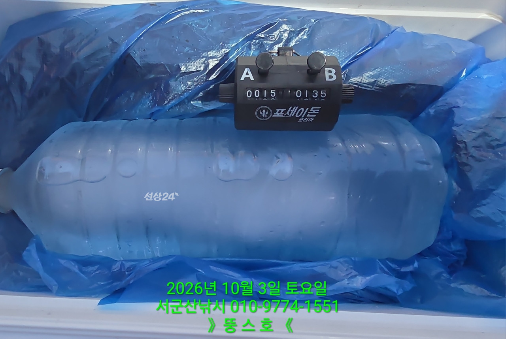
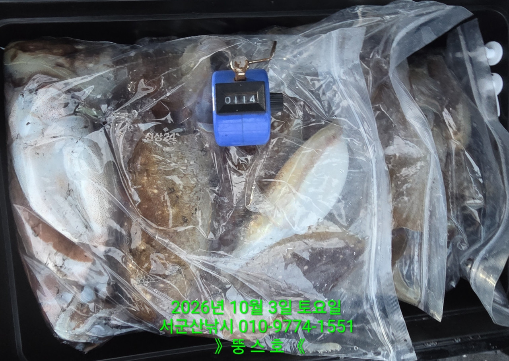
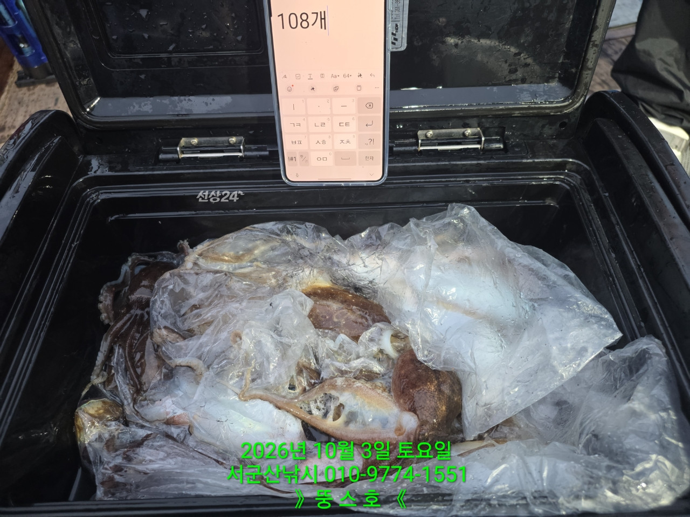
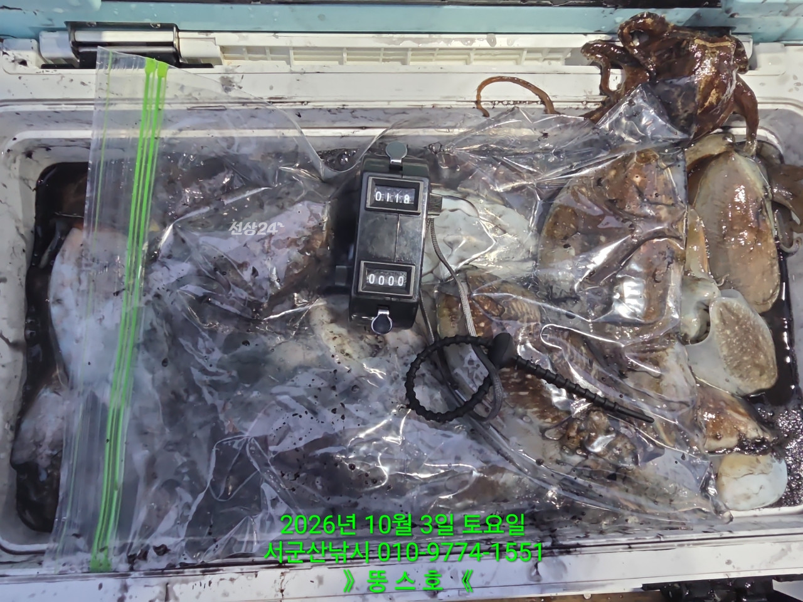
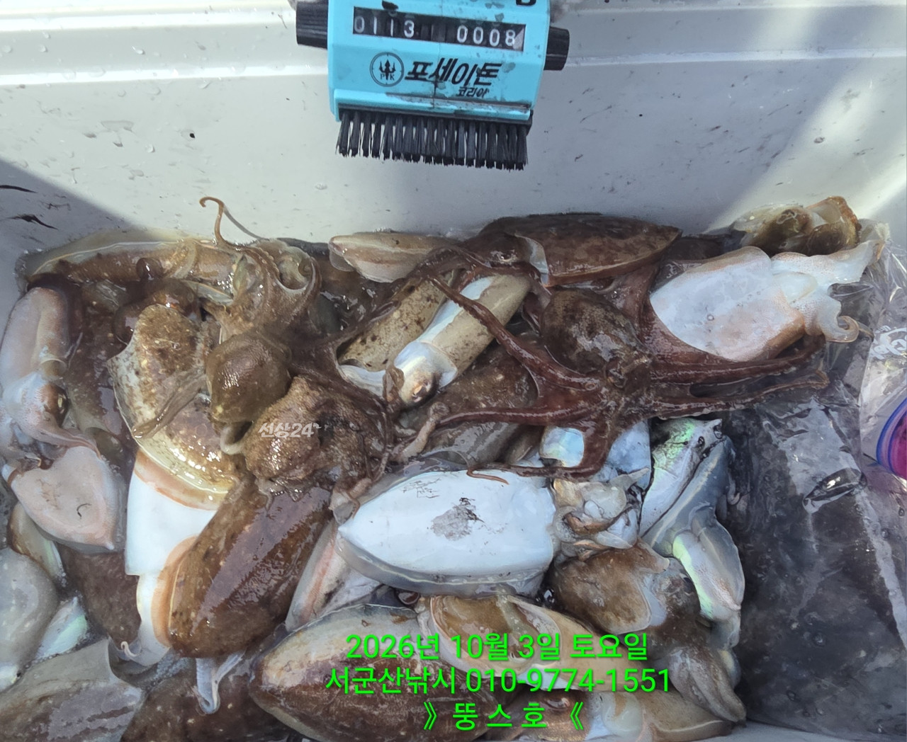
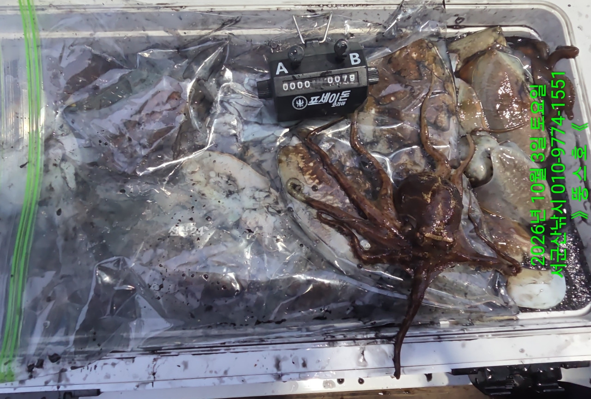

2026-10-03 · 군산 뚱스호
조황정보 HOME / 조황정보 / 조황상세
10/3 [군산 뚱스호]_갑오징어 종일반 대박 조황 ~! 10/3 [군산 뚱스호]_갑오징어 종일반 대박 조황 ~! 안녕하십니까..10월 3일 갑오징어종일반 조황입니다오늘같은날은 다신 없을듯..어제의 여파로 너울을피해 섬으로같으나 답답하기만하여바깥으로 나가 너울타며진행하니 하나하나 좀지루하게 나와주어그냥 꾸준히 타는데 서서히 랜딩 횟수가증가하더니 여러명이 감기 시작하는데오우야..이런일은 저번에보고 오랫만이다하고 밥도 잊은채 열심히 잡고쉴겸해서 밥도 먹고 2차전 시작하는데어째 영..그러다 다시 랜딩 시작..입질 안할때까지 해보자하고 시계 안보고 있는데이건 끊고 집에가야할것 같아강제로 끊고 매우 좋은 조황 으로 마무리하고 철수하였습니다 카운터 하신분중에 세자리수 8명카운터 안하신분중에 정리하면서 보니 2명더여성초보 조사님은 젤 많이 잡은 기록이라며조과사진 올려달라고 하셔서 사진 빡..79수..오늘오신 조사님들 고생 많으셨습니다1,2번 사진은 부부조사님 조과물을 합친거며카운터기만 바꿔가며 찍었습니다 ■ 예약문의 : 063-466-6565 서군산낚시 (서해안/비응항) 1.7km 갑오징어 10시간 전 | 조회 150 서군산낚시 (서해안/비응항) 10시간 전 | 조회 150








